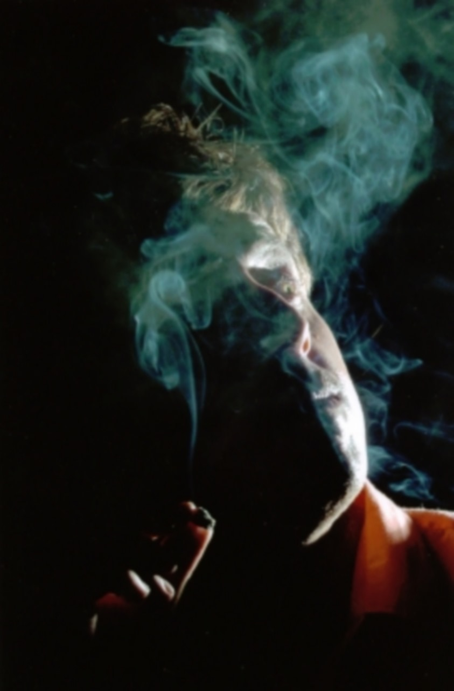
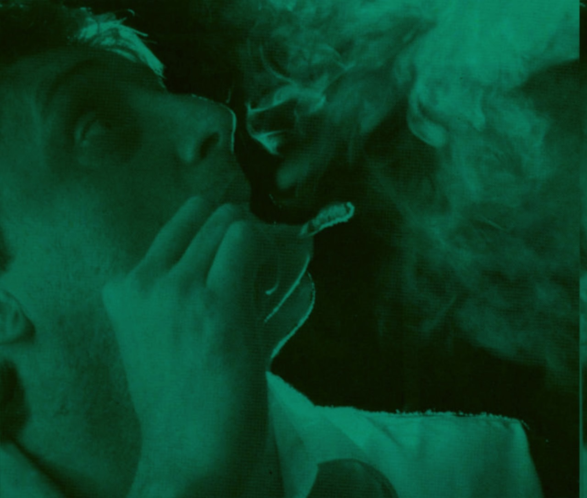

CINEMA INDEPENDENTE · VALE DO PARAÍBA
A arte de
não caber
em uma só.
Cineasta. Ator. Músico. Poeta.
Uma vida atravessada pela invenção.

Cinema na veia.
Poesia em
todo o resto.
Márcio Vaccari faz da passagem entre linguagens o seu território de criação.
Nascido em Lorena, no Vale do Paraíba, em 22 de agosto de 1966, é cineasta, ator, roteirista, músico, poeta e escritor. Seu cinema autoral aproxima imagem, artes plásticas e poesia. [1]
Dos microfilmes em Super 8 às experiências digitais, sua trajetória reúne direção, dramaturgia, composição e atuação. Uma obra que se move entre a tela, o palco e a página. [2]
Entre nesse universo ↗Um universo
em movimento.
Filmes, experiências e encontros.
Uma seleção para começar a explorar.
Composições gráficas criadas para este site. Abra os trabalhos para consultar seus registros e fontes.
UMA CANÇÃO, MUITOS CAMINHOS
Palavras que
viraram som.
A poesia também encontra a sua voz na música brasileira.
“Perdidos na Selva”, composta por Júlio Barroso, Márcio Vaccari e Guilherme Arantes, ganhou projeção com a Gang 90 & As Absurdettes no festival MPB-Shell de 1981. Integra o álbum da banda de 1983. [4]
A canção também chegou à trilha de Malhação, na TV Globo, ampliando o encontro de sua obra com outras gerações. [5]
Buscar a canção no YouTube ↗O que não cabe na tela
encontra a página.
Ver publicações ↗EM
BRASAPOESIA & FICÇÃO
Carne em Brasa
Um romance em poesia, nascido do encontro entre dois personagens durante as filmagens de Beat Vale.
Conhecer o livro ↗dos
loucosA SAUDADE URINOU EM MINHA PERNA
Nau dos Loucos
Uma experiência poética sobre ausência e ruptura. O catálogo registra a segunda edição em 2021.
Conhecer o livro ↗NÃO TINHA
DENTESPOESIA & ARTES
Nietzsche Não Tinha Dentes
Poesia, existência e filosofia em diálogo com a obra de Lôlo e com Nietzsche.
Conhecer o livro ↗MATA
DOUROROMANCE INTERROMPIDO
Matador Matadouro
Ficção experimental situada na periferia de Lorena. Terceira edição registrada em 2023.
Conhecer o livro ↗As peças tipográficas são interpretações visuais do site, não reproduções das capas. As páginas dos livros são as fontes das informações.

Uma obra aberta
à descoberta.
Os caminhos desta pesquisa.
Documentos, publicações e referências.
Márcio Vaccari — biografia
Wikipédia · referência de identidade indicada para este acervo
Currículo artístico e filmografia
Prefeitura de Pindamonhangaba · Fórum Vale Poético, 2022 · páginas 10–11
Mídia, a Grande Mentira na pesquisa acadêmica
Unesp · dissertação de Tânia Olivatti · análise do filme
Perdidos na Selva
Jornal Cidade · composição, lançamento e trajetória da canção
Cinema, interpretação e novas linguagens
Prefeitura de Pindamonhangaba · currículo de Márcio Augusto Vacari · página 7
Causos e Canções
Prefeitura de Pindamonhangaba · projeto músico-teatral · 2023
Vale Poético, Vale Humor e curadoria
Prefeitura de Pindamonhangaba · currículo em projeto cultural · páginas 9–10
Publicações do autor
Clube de Autores · livros, sinopses e dados das edições
Sobre esta pesquisa e as datas do acervo +
Os títulos de apresentação, como “A arte de não caber em uma só”, “Cinema na veia” e “Palavras que viraram som”, foram criados para este site. Não são declarações, versos ou citações de Márcio Vaccari. Os nomes de obras são identificados no acervo e remetem às fontes.
Este site apresenta uma seleção documentada da trajetória do cineasta de Lorena, identificado no verbete indicado. Pesquisa realizada em 16 de outubro de 2026. Não é um catálogo completo, nem se apresenta como site oficial.
Os currículos de projetos culturais são declarações dos proponentes. Para Santo de Casa, há registros de 2013 e 2014; para Beat Vale, de 1992 e 1995. Por isso, esses cartões não fixam um ano. Nas demais obras cinematográficas, seguimos o currículo de 2022. Livros podem ter datas diferentes conforme a edição.
A atuação como artista visual é documentada no currículo e em sua relação com o cinema. Não foram localizadas fichas independentes suficientes para catalogar pinturas ou exposições. O verbete menciona novelas de modo geral; títulos e personagens não foram confirmados. A autoria de Telefone tem créditos divergentes e não foi incluída como composição confirmada.